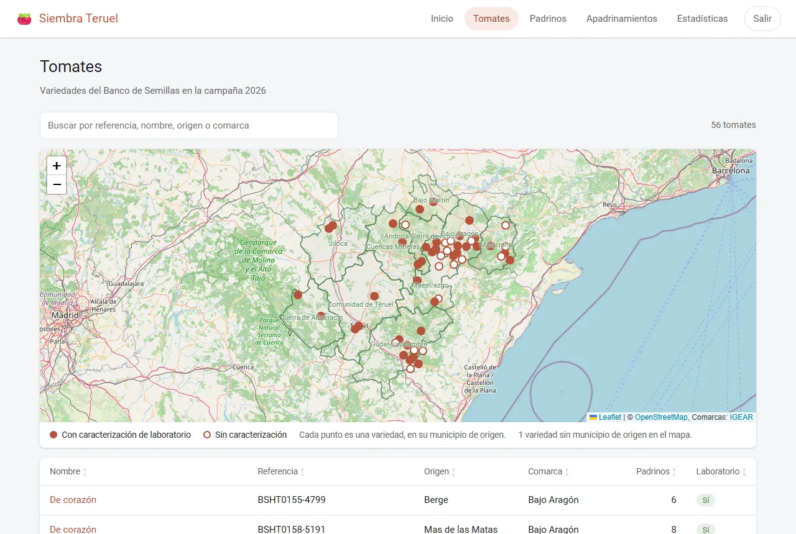
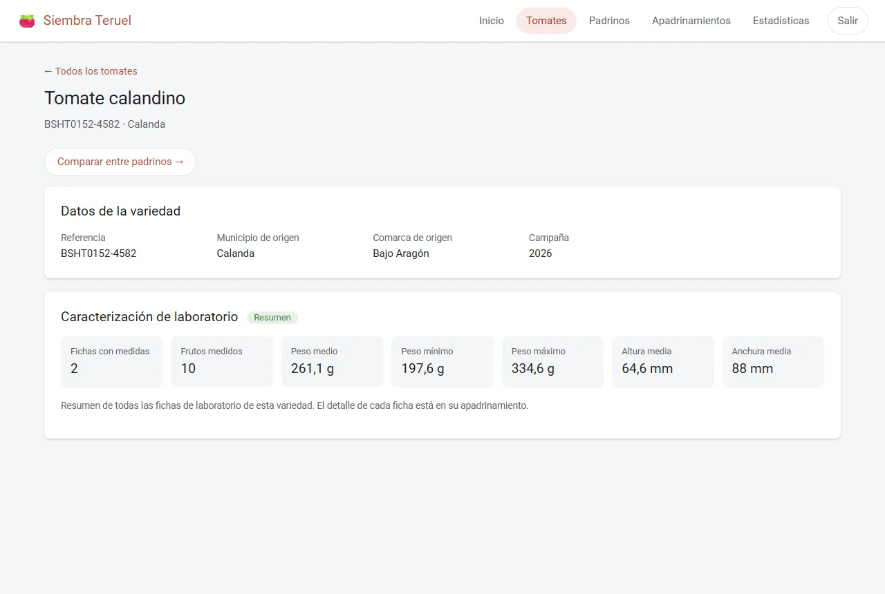
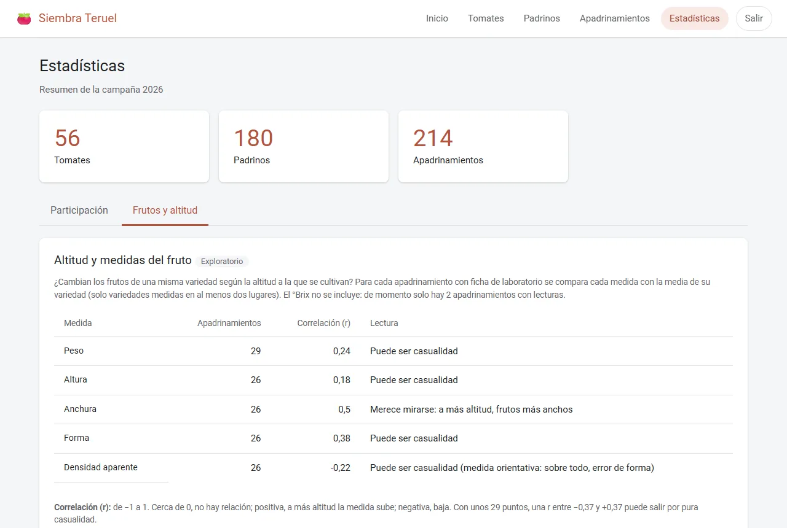

Siembra Teruel: los tomates del Banco de Semillas del CITA
Siembra Teruel es un proyecto del CITA (Centro de Investigación y Tecnología Agroalimentaria de Aragón) en el que personas de toda la provincia de Teruel, los padrinos, cultivan variedades tradicionales de tomate de su Banco de Semillas.
Para la campaña de 2026 he hecho un panel web privado donde el equipo del CITA consulta en un solo lugar las 56 variedades, los 180 padrinos y los 214 apadrinamientos, con las fotos, los comentarios y las fichas de laboratorio.
Capturas de pantalla
-

-

-

-

Qué hay en el panel
-
Las variedades
- Lista con buscador y mapa de los municipios de origen
- Ficha de cada variedad, con el resumen de las medidas de laboratorio
- Comparación de una misma variedad entre los lugares donde se cultiva
-
Padrinos y apadrinamientos
- Ficha de cada padrino, con las variedades que cultiva
- Cada apadrinamiento con sus fotos y los comentarios en orden
- La ficha de laboratorio: peso y medidas de los frutos y grados Brix
-
Estadísticas
- Participación por comarca y por altitud, en gráficos y tablas
- Una primera mirada a cómo cambian los frutos según la altitud
Privado y fácil de mantener
El panel es privado: solo entra el equipo del CITA, con su cuenta. Los datos personales de los padrinos no se publican en ningún sitio, y las capturas de esta página no muestran ninguno.
Hecho con HTML, CSS y JavaScript, sin frameworks ni compilación, con Firebase (servidores en Europa) para los datos y las cuentas, y mapas con Leaflet y OpenStreetMap. El código está en castellano para que el CITA lo pueda mantener.
Si tienes un proyecto de ciencia ciudadana o un banco de semillas y quieres ordenar sus datos, hablemos.